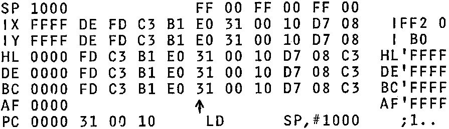

INMC News |
April/May 1980 · Issue 7 |
| Page 29 of 39 |
|---|
Other options in brief:
We have tested NAS-DIS and can verify that it disassembles all machine code correctly, with no nasty quirks. It is an excellent piece of software.
NAS-DIS is available from Nascom through your dealers. Ask your dealer about it. If he doesn’t know anything about it, nag Nascom Sales Department for prices and ask them why it isn’t available.
SUPER DEBUG (we’ll call D-BUG) is a 1K program which runs under NAS-SYS. In order to work, it requires that NAS-DIS also be installed. D-BUG lives at C000H – C3FFH, D-BUG can therefore fill the eighth 2708 socket on the Nascom 2 CPU board, so that with NAS-DIS the whole becomes a 4K package.
The aim of D-BUG is to make it easier to examine the workings of other programs. The principle feature is a comprehensive and labelled display of all the CPU registers, as well as the eight bytes pointed to by each of the main registers. The example below gives an idea of the display:
As you can see, the next instruction to be executed has also been disassembled. This means that you can single step through a program and read each instruction in assembler at the same time. This also works with breakpoints.
D-BUG uses NAS-SYS editing in an unusual and advanced way. The cursor can be moved up and the lines of display edited, one line at a time. The memory locations pointed at by the registers can be altered, and the values of SP, IX, IY, HL, DE, BC, AF, and PC can also be altered. If the code after PC is altered, the disassembled source code appears at once. The values of IFF2, I, and the alternate registers cannot be directly altered in this way. A character representation of the flags is output when the flags are set, and these can be altered by editing the F register.
| Page 29 of 39 |
|---|